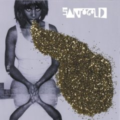

|
Santogold (Santi White) is a new artist originally from Philadelphia who Warner introduced me to this year. My first reaction to this song was how similar her voice sounds to Martha Davis from 80's band The Motels. I loved The Motels so I was immediately hooked. Her style is heavily based on ska. Super-producer Mark Ronson (of Lily Allen and Amy Winehouse fame) was part of the production team for her debut release. For fans of ska and reggae this is a fine album with several fun tracks. |
 |